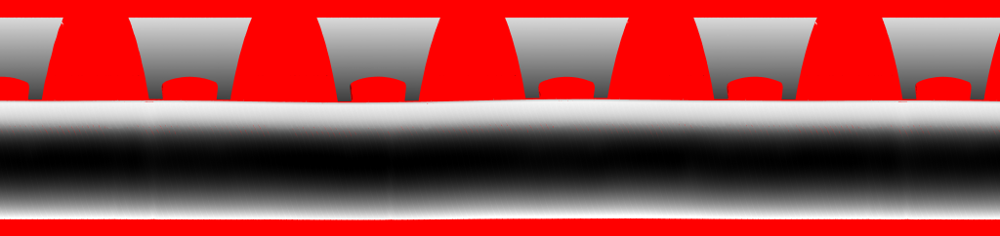
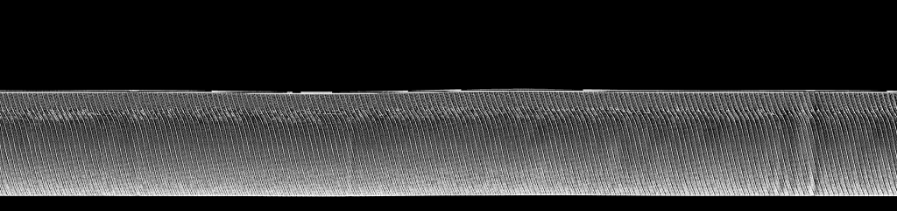
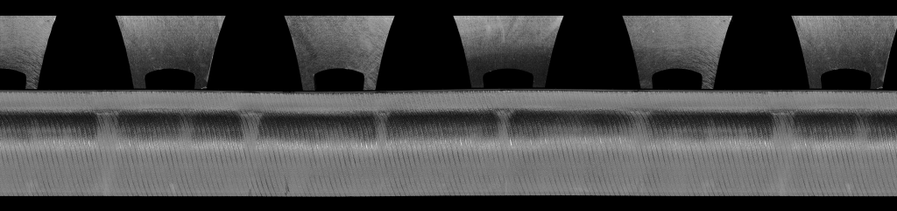
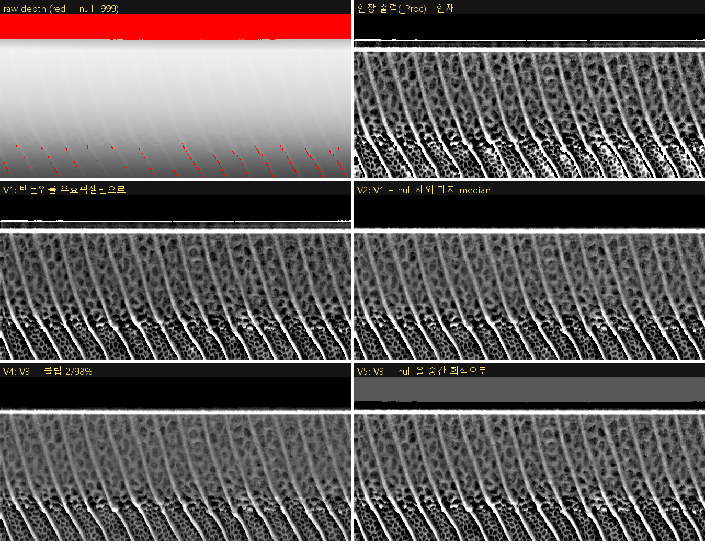
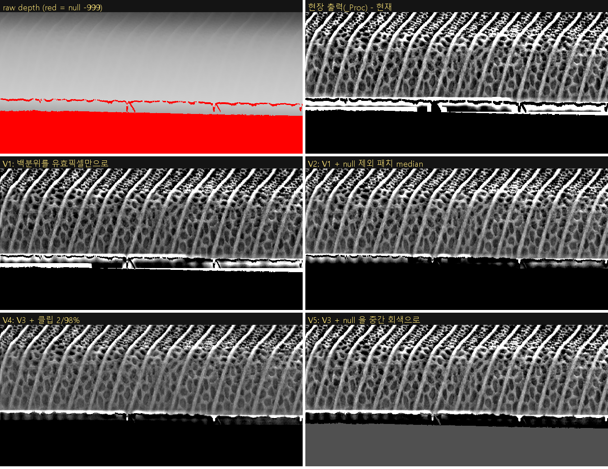
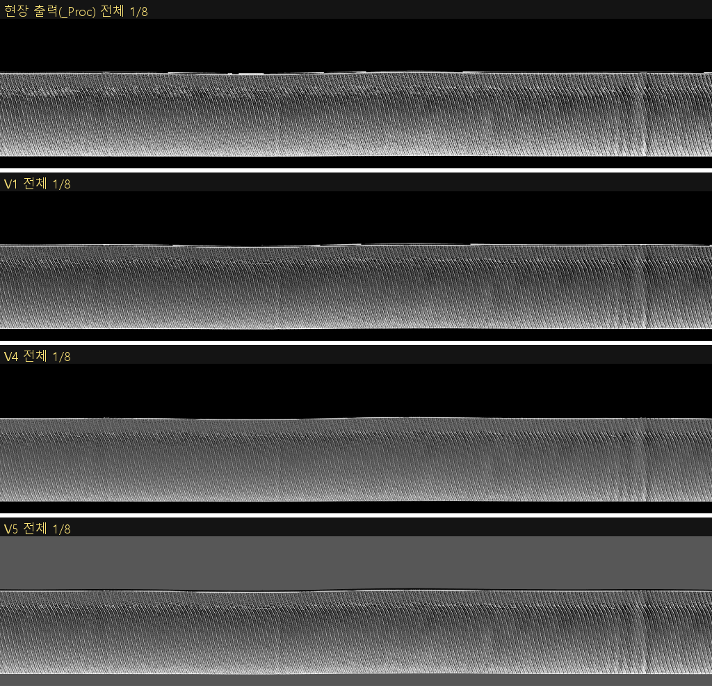
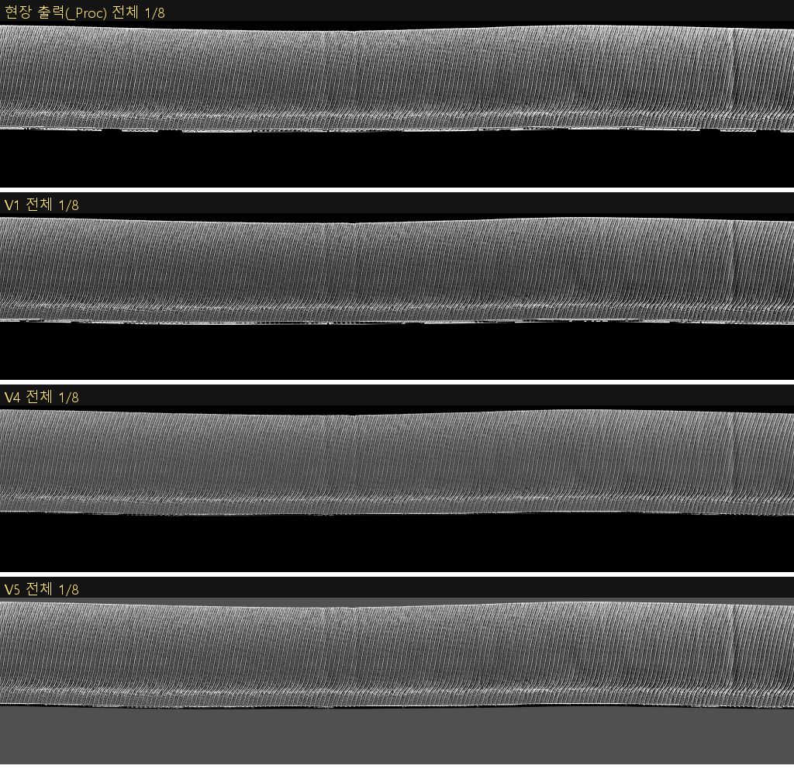

작성 2026-09-18 · 대상 H:\000. PJT\01. HankookTire\03_이미지\PC3\1639390184_2000026091709423060 (2026-09-17 09:45 저장) · 이미지 11/12/23/24(_Proc) 와 원본 5/7/17/19 · 코드 E:\talos-platform\src\Vision\fovAlg\alg_depth_preproc\3dDepthProcessing.cpp · 레시피 D:\AIV\MODEL\[1]TireInspect_PC3_DEPLOY\FOVPROC.ini / alg_depth_preproc.ini
postClipNormalize 의 하위 5% 클리핑이 값 0(검정)으로 정규화되어 생긴 것이다. 숄더 경사가 가장 급한 구간(경사 약 60°, R 센서 행 1013~1161, L 센서 행 1092~1203)에서 내부 라이너 벌집 셀 바닥이 국소 기준면보다 0.35~0.55 mm 낮아 클립 임계(−0.19~−0.21 mm)를 넘는 픽셀이 20~33% 몰려 띠로 보인다. 벌집 무늬가 없는 타이어(1번 사진으로 추정)에서는 같은 5% 가 리브 골에 흩어져 띠가 안 보인다. 즉 타이어 패턴 의존 현상이다.removeStageFromRawData(최대 연결성분만 유지, 나머지 −999) 가 들어 있다. 지그(사다리꼴 블록)가 _Proc 에서 검게 지워진 것이 증거이며, 파이썬 재구현으로 검정 마스크가 99.6% 일치한다. 이 코드는 미병합 브랜치 feat/ALG-288-stage-ignore-preproc(5/15) 에만 있고 한국타이어 플랫폼 브랜치 TTM-314(8/24) 에는 없다 → 플랫폼 재빌드·재배포 시 지그가 되살아나는 회귀 위험. 같은 커밋에는 매 INSPECT 마다 E:\debug_input_after_proc.mim(63~94 MB) 을 쓰는 디버그 저장이 살아 있어 PC3 에서 해당 파일 존재·시각 확인이 필요하다.alg_depth_preproc.ini 의 Lower/Upper Percentage 는 읽기만 하고 사용되지 않는다(코드에 5/95 하드코딩). ini 로는 클립을 바꿀 수 없다.| 구분 | _Proc 에서의 모습 | 원본 depth | 비중(숄더 8192×1940 기준) | 판단 |
|---|---|---|---|---|
| ① 지그 사이 공기 | 화상 상·하부의 큰 검정 영역 | −999 (센서 무데이터, intensity 도 0) | 33~38% (null 전체) | 정상. 채울 대상 아님 |
| ② 스테이지 지그(사다리꼴 블록) | 검정 (지워짐) | 유효값 (z≈−53 mm) | R 센서 20.7%, L 센서 11.7% | DLL 의 removeStage 가 −999 로 치환. 의도된 동작이나 미병합 코드 |
| ③ 타이어 띠 안 검은 띠·점 | 급경사 구간의 벌집 셀 바닥이 검정, 흰 셀 벽이 점처럼 보임 | 유효값 (기준면 대비 −0.2 mm 이하) | 띠 픽셀의 8.1~9.0% (그중 실제 null 0.1~0.4%) | 문의 대상. 하위 5% 클리핑 산물 |
| 원본 → _Proc | null(−999) % | 타이어 띠 행 범위 | 유효 연결성분 수 / 최대 성분 비중 | _Proc 검정 중 원본 유효 | 띠 안 검정 % | 띠 안 흰색(255) % | 띠 안 실제 null 구멍 |
|---|---|---|---|---|---|---|---|
| 5_SWU_Sh_L_D → 11 | 38.04 | 286~1378 | 248 / 88.3% | 1,851,613 px | 8.08 | 9.18 | 11,499 px (761개, 최대 670) |
| 7_SWU_Sh_R_D → 12 | 33.48 | 814~1808 | 229 / 75.4% | 3,284,220 px | 8.60 | 10.01 | 7,890 px (1,183개, 최대 170) |
| 17_SWD_Sh_L_D → 23 | 37.80 | 255~1371 | 396 / 88.3% | 1,870,902 px | 8.15 | 9.17 | 34,534 px (552개, 최대 3,445) |
| 19_SWD_Sh_R_D → 24 | 33.81 | 821~1809 | 249 / 75.2% | 3,317,205 px | 8.99 | 10.10 | 11,588 px (1,470개, 최대 225) |
| 3_SWU_Bead_D → 10 (참고) | 37.46 | - | 163 / 99.995% | 272,231 px | - | 5.05 | - |
| 1_SWU_Cen_D → 9 (참고) | 13.40 | - | 3 / 100% | 665,217 px | - | 5.70 | - |
"_Proc 검정 중 원본 유효" = 지워진 지그(②) + 하위 클리핑(③). intensity==0 픽셀 집합이 depth −999 집합과 정확히 일치해 null 은 센서 단계에서 발생한 것임을 확인했다(grab 플러그인 GocatorSensor.cpp 가 0x8000 → −999.f 치환).



스케일: 띠 z 범위 −36.07~18.65 mm → 1 mm = 1,197 단위. 현장 클립 임계 low = −246 단위(−0.205 mm), high = 486(0.406 mm). 화소 픽셀의 49.0% 가 diff==0(null) 이라 백분위가 왜곡된다.
| bin | 행 | 평균 z (mm) | diff p5 (mm) | diff p50 | diff p95 | 현장 검정 % | diff<low 비율 % |
|---|---|---|---|---|---|---|---|
| 0 | 814~862 | 7.32 | −0.359 | 0.057 | 11.51 | 14.9 | 13.2 |
| 1 | 863~912 | 8.68 | −0.179 | 0.015 | 0.220 | 3.3 | 2.9 |
| 2 | 913~962 | 5.78 | −0.161 | 0.014 | 0.211 | 2.2 | 2.0 |
| 3 | 963~1012 | 0.50 | −0.305 | 0.002 | 0.350 | 12.3 | 11.8 |
| 4 | 1013~1061 | −8.78 | −0.553 | −0.066 | 0.779 | 30.6 | 32.9 |
| 5 | 1062~1111 | −19.42 | −0.427 | −0.087 | 0.593 | 26.3 | 29.3 |
| 6 | 1112~1161 | −26.58 | −0.345 | −0.072 | 0.372 | 21.4 | 20.8 |
| 7 | 1162~1211 | −30.91 | −0.282 | −0.053 | 0.302 | 14.2 | 13.4 |
| 8 | 1212~1260 | −33.46 | −0.248 | −0.038 | 0.278 | 10.1 | 9.4 |
| 9~18 | 1261~1758 | −34.8 → 0.7 | −0.15~−0.20 | ≈0 | 0.26~1.04 | 2.4~5.3 | 2.1~4.8 |
| 19 | 1759~1808 | 10.57 | −0.089 | 0.415 | 6.61 | 4.7 | 1.8 |


FOVPROC0003/0004/0007/0008 (RequireImgIdx 5/7/17/19 → ResultImgIdx 11/12/23/24, ParamIdx 3 = [CAL0003] INSHOULDER, PatchSize 15,15, Overlap 0.25, ROI 9999,9999,0,0)
└ alg_depth_preproc.dll PREPROC_3D_Initial → C3DPreprocess::INSPECT
1. MbufSave(L"E:\\debug_input_after_proc.mim") ← ALG-288 커밋에 살아 있는 디버그 저장 (63~94 MB/호출)
2. DeepCopyMil2OpencvFloat 32-bit float 원본 (null = -999.f)
3. removeStageFromRawData(src, StagePosition=AUTO) 유효(> -900) 픽셀 8-연결 성분 중 최대 1개만 남기고 나머지 -999
4. processHighCurvature(src, 15x15, 0.25)
null_mask = (data == -999)
scaleTo16bitIgnoreNull : 유효 min/max 로 0..65536 스케일, null → 0
patchBasedMedian : 15x15, step 11, null(=0) 포함 median → 격자(176x744) 를 INTER_LINEAR 로 확대 = 기준면
diff = scaled - basis → int16 절단
postClipNormalize(diff, 5, 95) : null 포함 전 픽셀 백분위(std::sort 2회) 로 클립 → NORM_MINMAX 0..255
anomaly.setTo(0, null_mask) : null → 0
5. CopyOpencv2Mil_KeepBuffer_If32 → 출력 MIL 버퍼(32-bit float 에 0..255 값)
| # | 항목 | 내용 | 영향 |
|---|---|---|---|
| 1 | 현장 DLL 정체 | PC3 로그(7/29, 9/14) 모두 alg_depth_preproc.dll 1.0.2.0. 1.0.2.0 rc 는 4/17~5/8 CI 커밋(removeStage 없음)인데 현장 출력은 지그가 지워져 있음 → rc 를 올리지 않은 ALG-288 WIP 로컬 빌드로 판단. 이 PC 의 E:\talos-vision\bin\...\alg_depth_preproc.dll(1.0.2.0, 5/13) 는 removeStage 문자열이 없어 현장 파일과 다르다. | 현장 DLL 과 일치하는 소스가 리포지토리에 없음(가장 근접: 0a6814f2) |
| 2 | 브랜치 불일치 | removeStage 는 feat/ALG-288-stage-ignore-preproc(0a6814f2, 5/15) 에만 존재. 한국타이어 플랫폼 브랜치 TTM-314-All_About_HankookTire(afd64bc4, 8/24) 의 같은 파일은 removeStage 없음, 디버그 저장은 주석 상태. | TTM-314 로 재빌드하면 지그가 _Proc 에 다시 나타나 모델 입력이 바뀜 |
| 3 | 디버그 저장 | 0a6814f2 의 720행 MbufSave(L"E:\\debug_input_after_proc.mim", m_vecInput[0]); 가 주석 해제 상태. 현장 WIP 빌드에 포함됐는지는 PC3 에서 파일 존재로 확인해야 함(현장 FOVPROC 소요: 센터 3.0 s, 숄더 1.3 s, 비드 0.6 s 중앙값, 9/14 58회). | 디스크 쓰기 8회/타이어, 최대 약 630 MB/타이어 |
| 4 | ini 키 무효 | Lower Percentage / Upper Percentage 는 m_lowerPct/m_upper_pct 에 읽기만 하고 postClipNormalize(diff_float, 5, 95) 로 하드코딩 호출. TTM-314 도 동일. | ini 로 클립 조정 불가 |
| 5 | removeStage 취약점 | 최대 성분 1개만 유지. 타이어 띠가 null 로 완전히 끊기면(전폭 dropout 등) 작은 쪽이 통째로 검정이 됨. 이번 타이어는 구멍이 작아 미발생. | 잠재 회귀. 면적 임계 방식이 안전 |
| 6 | 미사용 코드 | incenter_processing / shoulder_processing / IncenterProcessing / InShoulderProcessing / DeepCopyMil2OpencvNormalize / processInnerCenter 는 호출되지 않음. INNERCENTER/BEAD/INSHOULDER 세 타입 모두 processHighCurvature 로 동일 처리. | 정리 대상 |
| 7 | 성능 | computePercentile 가 16M float 을 std::sort 로 2회 정렬. nth_element 또는 히스토그램으로 대체 가능. | 숄더 1.3 s 중 상당 부분으로 추정 |
재구현 정합: removeStage 포함 시 검정 마스크 99.6% 일치, 비검정 픽셀의 96.9% 가 ±2 이내(정렬·보간 반올림 차이). removeStage 없이는 2.76M 픽셀이 불일치해 현장 DLL 에 removeStage 가 있음을 확정.
| 변형 | 내용 | 12: 띠 검정 % | 12: 최악 bin % | 23: 띠 검정 % | 23: 최악 bin % | 평가 |
|---|---|---|---|---|---|---|
| 현장 | - | 8.60 | 30.6 | 8.15 | 27.0 | - |
| V0 | 재구현(현재 코드) | 8.45 | 33.0 | 7.63 | 24.1 | 기준 |
| V1 | 백분위를 유효 픽셀만으로 | 5.08 | 26.7 | 5.09 | 19.9 | 최소 수정. 검정 40% 감소, 띠는 남음 |
| V2 | V1 + null 제외 패치 median | 5.07 | 54.0(경계 bin) | 5.09 | 47.5(경계 bin) | 흰 halo 사라지나 띠 경계 첫 bin 이 검정으로 바뀜 → 경계 처리 별도 필요 |
| V3 | V2 + 5,000 px 이하 구멍 인페인팅 | 5.08 | 54.1 | 5.00 | 53.5 | 구멍 7,882/21,587 px 채움. 효과 미미 |
| V4 | V3 + 클립 2/98% | 2.03 | 11.0 | 1.98 | 7.7 | 띠 크게 완화. 대비(콘트라스트) 감소 → 모델 영향 |
| V5 | V3 + null 을 중간 회색(87/80) | 5.08 | 54.1 | 5.00 | 53.5 | null 과 골을 구분. 모델 입력 분포 변경 |
| V6 | V3 + 패치 45×15(가로 확대) | 5.07 | 53.7 | 5.02 | 52.4 | 띠에 효과 없음 |


| 단계 | 조치 | 효과 | 비용·위험 |
|---|---|---|---|
| 0. 확인(즉시) | PC3 에서 E:\debug_input_after_proc.mim 존재·수정시각 확인, 현장 alg_depth_preproc.dll 해시·크기 확보, 현장 플랫폼 소스 계보(어느 브랜치로 빌드했는지) 확인 | 디스크 쓰기 제거 가능성, 회귀 위험 판단 | 없음 |
| 1. 코드 정리(출력 거의 불변) | 디버그 MbufSave 제거 · removeStage 를 TTM-314 에 반영(면적 임계 옵션 추가) · ini 백분위 키 실제 연결 · rc 버전 상향 | 회귀 위험 제거, 파라미터 조정 가능 | 결과 비트 동일 유지 가능(5/95 유지 시) |
| 2. 소폭 개선(V1) | 백분위를 유효 픽셀만으로 계산 | 띠 검정 8.6 → 5.1% | 대비가 약간 약해짐(low −0.205 → −0.26 mm). 모델 재검증 필요, 재학습까지는 불필요할 가능성 |
| 3. 근본 개선 | mm 절대 스케일 정규화(예: ±0.5 mm → 0..255, 0 mm = 128) + null 전용 값(0 예약, 유효는 1..255 또는 null=128) + 경계 마스크 median | 타이어 간 일관된 대비, 검은 띠 소멸, null/골 구분 | 3D_SHOULDER·CENTER·BEAD 모델 입력 분포 변경 → 재학습(또는 파인튜닝) 필수 |
| 4. 센서 | Gocator job 의 Gap Filling 확인(현장 D:\AIV\gocator_jobfile\...) | 타이어 내부 dropout 0.1~0.4% 감소 | 효과 미미. 지그 사이 null 은 공기라 채울 대상 아님 |
권장 순서는 0 → 1 → 2 이며, 3 은 모델 재학습 일정과 묶어 별도 검토가 적절하다. 1번 사진 수준의 "깨끗한" 출력을 벌집 패턴 타이어에서 얻으려면 3 이 필요하다.
근거자료\analyze.py — null 통계·연결성분·_Proc 대조(로그 analysis.log, summary.json)근거자료\crops.py — 띠 안 검정/흰색 행 분포, 구멍 크기, 671×341 크롭근거자료\simulate.py — DLL 파이프라인 재구현·현장 출력 정합 검증(withStage/noStage)근거자료\variants.py — 변형 V0~V6 (로그 variants.log, variants_*.json)근거자료\physical.py — mm 환산·행 구간별 p5/p50/p95근거자료\dllstrings.py — DLL 빌드의 StagePosition/디버그 경로 문자열 검사img\ — 원본(null 빨강)·_Proc·intensity 1/8 축소본, 크롭, 변형 비교 몽타주H:\...\02_로그\0914_LOG\Before\14_PC3\{fov_alg.log, depthpreproc.log}, 02_로그\0730_PC3_LOG\29\depthpreproc.log0a6814f2(ALG-288), afd64bc4(TTM-314), src/Vision/grab/grab_gocator/GocatorSensor.cpp:833(−999 치환)C:\Users\AIV\Desktop\alg_depth_preproc_분석\alg_depth_preproc_코드분석_2026-09-18.md